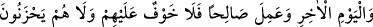
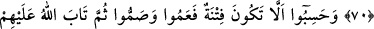

57. Ey îman edenler! Sizden önce kendilerine kitap verilmiş olanlardan dîninizi
alay ve oyun konusu edinenleri ve kâfirleri dost edinmeyin. Eğer mü’minler iseniz
Allah’tan korkun.
58. Namaza çağırdığınız zaman onu alay ve eğlence konusu yaparlar. Bu onların
düşünemeyen bir toplum olmalarındandır.
59. (Onlara) şöyle de: Ey kitap ehli! Yalnızca Allah’a, bize indirilene, daha önce
indirilenlere inandığımız ve sizin çoğunuzun da yoldan çıkmış kimseler olduğu için
mi bizden hoşlanmıyorsunuz?
60. De ki: Allah katında karşılığı bundan daha kötü olanı size haber vereyim mi?
Allah’ın lanetlediği ve gazâb ettiği, aralarından maymunlar, domuzlar ve şaytana
tapanlar çıkardığı kimseler. İşte onların yeri (durumu) daha kötüdür ve doğru
yoldan daha çok sapmışlardır.
61. Onlar size geldiklerinde “inandık” derler. Halbuki yanınıza inkârla girip yine
inkârla çıkarlar. Allah onların gizlediklerini daha iyi bilir.
62. Onlardan çoğunun günah, düşmanlık ve haram yemede yarıştıklarını
görürsün. Yaptıkları ne kadar kötüdür!
63. Rabbânîler ve hahamların, onları günah söz söylemekten ve haram yemekten
menetmeleri gerekmez miydi? İşledikleri ne kadar kötüdür!
64. Yahûdîler, Allah’ın eli bağlıdır (sıkıdır), dediler. Dedikleri yüzünden elleri
bağlansın ve onlara lanet olsun! Bilâkis, Allah’ın iki eli de açıktır, dilediği gibi verir.
Andolsun ki Rabbinden sana indirilen, onların çoğunun azgınlığını ve küfrünü
arttırır. Biz onların aralarına kıyâmet gününe kadar (sürecek) düşmanlık ve kin
soktuk. Ne zaman savaş için bir ateş yakmışlarsa Allah onu söndürmüştür. Onlar
yeryüzünde bozgunculuğa koşarlar. Halbuki Allah bozguncuları sevmez.
65. Eğer ehl-i kitap îman etmiş ve (kötülüklerden) sakınmış olsalardı, onların
kötülüklerini örter ve onları nimeti bol cennetlere sokardık.